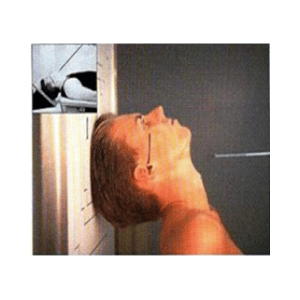
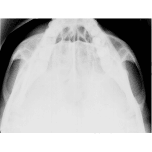

Paciente em D.D. ou sentado, pescoço em hiperextensão.
18×24 transversal panorâmico.
⊥ à LIOM, orientado para entre os gônios.
1,00 m – com ou sem bucky.


Observação: PMS ⊥ ao filme. LIOM paralela ao filme.